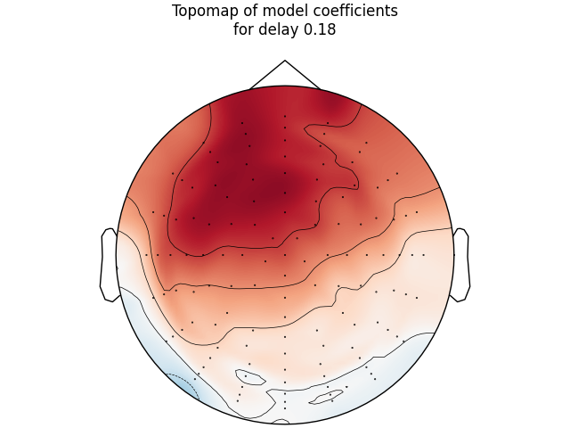

Note
Go to the end to download the full example code
Receptive Field Estimation and Prediction#
This example reproduces figures from Lalor et al.’s mTRF toolbox in
MATLAB [1]. We will show how the
mne.decoding.ReceptiveField class
can perform a similar function along with scikit-learn. We will first fit a
linear encoding model using the continuously-varying speech envelope to predict
activity of a 128 channel EEG system. Then, we will take the reverse approach
and try to predict the speech envelope from the EEG (known in the literature
as a decoding model, or simply stimulus reconstruction).
# Authors: Chris Holdgraf <choldgraf@gmail.com>
# Eric Larson <larson.eric.d@gmail.com>
# Nicolas Barascud <nicolas.barascud@ens.fr>
#
# License: BSD-3-Clause
# Copyright the MNE-Python contributors.
sphinx_gallery_thumbnail_number = 3
from os.path import join
import matplotlib.pyplot as plt
import numpy as np
from scipy.io import loadmat
from sklearn.model_selection import KFold
from sklearn.preprocessing import scale
import mne
from mne.decoding import ReceptiveField
Load the data from the publication#
First we will load the data collected in [1]. In this experiment subjects listened to natural speech. Raw EEG and the speech stimulus are provided. We will load these below, downsampling the data in order to speed up computation since we know that our features are primarily low-frequency in nature. Then we’ll visualize both the EEG and speech envelope.
path = mne.datasets.mtrf.data_path()
decim = 2
data = loadmat(join(path, "speech_data.mat"))
raw = data["EEG"].T
speech = data["envelope"].T
sfreq = float(data["Fs"].item())
sfreq /= decim
speech = mne.filter.resample(speech, down=decim, npad="auto")
raw = mne.filter.resample(raw, down=decim, npad="auto")
# Read in channel positions and create our MNE objects from the raw data
montage = mne.channels.make_standard_montage("biosemi128")
info = mne.create_info(montage.ch_names, sfreq, "eeg").set_montage(montage)
raw = mne.io.RawArray(raw, info)
n_channels = len(raw.ch_names)
# Plot a sample of brain and stimulus activity
fig, ax = plt.subplots(layout="constrained")
lns = ax.plot(scale(raw[:, :800][0].T), color="k", alpha=0.1)
ln1 = ax.plot(scale(speech[0, :800]), color="r", lw=2)
ax.legend([lns[0], ln1[0]], ["EEG", "Speech Envelope"], frameon=False)
ax.set(title="Sample activity", xlabel="Time (s)")
Creating RawArray with float64 data, n_channels=128, n_times=7677
Range : 0 ... 7676 = 0.000 ... 119.938 secs
Ready.
Create and fit a receptive field model#
We will construct an encoding model to find the linear relationship between a time-delayed version of the speech envelope and the EEG signal. This allows us to make predictions about the response to new stimuli.
# Define the delays that we will use in the receptive field
tmin, tmax = -0.2, 0.4
# Initialize the model
rf = ReceptiveField(
tmin, tmax, sfreq, feature_names=["envelope"], estimator=1.0, scoring="corrcoef"
)
# We'll have (tmax - tmin) * sfreq delays
# and an extra 2 delays since we are inclusive on the beginning / end index
n_delays = int((tmax - tmin) * sfreq) + 2
n_splits = 3
cv = KFold(n_splits)
# Prepare model data (make time the first dimension)
speech = speech.T
Y, _ = raw[:] # Outputs for the model
Y = Y.T
# Iterate through splits, fit the model, and predict/test on held-out data
coefs = np.zeros((n_splits, n_channels, n_delays))
scores = np.zeros((n_splits, n_channels))
for ii, (train, test) in enumerate(cv.split(speech)):
print("split %s / %s" % (ii + 1, n_splits))
rf.fit(speech[train], Y[train])
scores[ii] = rf.score(speech[test], Y[test])
# coef_ is shape (n_outputs, n_features, n_delays). we only have 1 feature
coefs[ii] = rf.coef_[:, 0, :]
times = rf.delays_ / float(rf.sfreq)
# Average scores and coefficients across CV splits
mean_coefs = coefs.mean(axis=0)
mean_scores = scores.mean(axis=0)
# Plot mean prediction scores across all channels
fig, ax = plt.subplots(layout="constrained")
ix_chs = np.arange(n_channels)
ax.plot(ix_chs, mean_scores)
ax.axhline(0, ls="--", color="r")
ax.set(title="Mean prediction score", xlabel="Channel", ylabel="Score ($r$)")
split 1 / 3
Fitting 1 epochs, 1 channels
0%| | Sample : 0/2 [00:00<?, ?it/s]
50%|█████ | Sample : 1/2 [00:02<00:02, 2.66s/it]
100%|██████████| Sample : 2/2 [00:02<00:00, 1.31s/it]
100%|██████████| Sample : 2/2 [00:02<00:00, 1.35s/it]
split 2 / 3
Fitting 1 epochs, 1 channels
0%| | Sample : 0/2 [00:00<?, ?it/s]
50%|█████ | Sample : 1/2 [00:00<00:00, 38.22it/s]
100%|██████████| Sample : 2/2 [00:00<00:00, 38.03it/s]
100%|██████████| Sample : 2/2 [00:00<00:00, 37.66it/s]
split 3 / 3
Fitting 1 epochs, 1 channels
0%| | Sample : 0/2 [00:00<?, ?it/s]
50%|█████ | Sample : 1/2 [00:00<00:00, 43.30it/s]
100%|██████████| Sample : 2/2 [00:00<00:00, 41.73it/s]
100%|██████████| Sample : 2/2 [00:00<00:00, 41.41it/s]
Investigate model coefficients#
Finally, we will look at how the linear coefficients (sometimes referred to as beta values) are distributed across time delays as well as across the scalp. We will recreate figure 1 and figure 2 from [1].
# Print mean coefficients across all time delays / channels (see Fig 1)
time_plot = 0.180 # For highlighting a specific time.
fig, ax = plt.subplots(figsize=(4, 8), layout="constrained")
max_coef = mean_coefs.max()
ax.pcolormesh(
times,
ix_chs,
mean_coefs,
cmap="RdBu_r",
vmin=-max_coef,
vmax=max_coef,
shading="gouraud",
)
ax.axvline(time_plot, ls="--", color="k", lw=2)
ax.set(
xlabel="Delay (s)",
ylabel="Channel",
title="Mean Model\nCoefficients",
xlim=times[[0, -1]],
ylim=[len(ix_chs) - 1, 0],
xticks=np.arange(tmin, tmax + 0.2, 0.2),
)
plt.setp(ax.get_xticklabels(), rotation=45)
# Make a topographic map of coefficients for a given delay (see Fig 2C)
ix_plot = np.argmin(np.abs(time_plot - times))
fig, ax = plt.subplots(layout="constrained")
mne.viz.plot_topomap(
mean_coefs[:, ix_plot], pos=info, axes=ax, show=False, vlim=(-max_coef, max_coef)
)
ax.set(title="Topomap of model coefficients\nfor delay %s" % time_plot)

- 
Create and fit a stimulus reconstruction model#
We will now demonstrate another use case for the for the
mne.decoding.ReceptiveField class as we try to predict the stimulus
activity from the EEG data. This is known in the literature as a decoding, or
stimulus reconstruction model [1].
A decoding model aims to find the
relationship between the speech signal and a time-delayed version of the EEG.
This can be useful as we exploit all of the available neural data in a
multivariate context, compared to the encoding case which treats each M/EEG
channel as an independent feature. Therefore, decoding models might provide a
better quality of fit (at the expense of not controlling for stimulus
covariance), especially for low SNR stimuli such as speech.
# We use the same lags as in :footcite:`CrosseEtAl2016`. Negative lags now
# index the relationship
# between the neural response and the speech envelope earlier in time, whereas
# positive lags would index how a unit change in the amplitude of the EEG would
# affect later stimulus activity (obviously this should have an amplitude of
# zero).
tmin, tmax = -0.2, 0.0
# Initialize the model. Here the features are the EEG data. We also specify
# ``patterns=True`` to compute inverse-transformed coefficients during model
# fitting (cf. next section and :footcite:`HaufeEtAl2014`).
# We'll use a ridge regression estimator with an alpha value similar to
# Crosse et al.
sr = ReceptiveField(
tmin,
tmax,
sfreq,
feature_names=raw.ch_names,
estimator=1e4,
scoring="corrcoef",
patterns=True,
)
# We'll have (tmax - tmin) * sfreq delays
# and an extra 2 delays since we are inclusive on the beginning / end index
n_delays = int((tmax - tmin) * sfreq) + 2
n_splits = 3
cv = KFold(n_splits)
# Iterate through splits, fit the model, and predict/test on held-out data
coefs = np.zeros((n_splits, n_channels, n_delays))
patterns = coefs.copy()
scores = np.zeros((n_splits,))
for ii, (train, test) in enumerate(cv.split(speech)):
print("split %s / %s" % (ii + 1, n_splits))
sr.fit(Y[train], speech[train])
scores[ii] = sr.score(Y[test], speech[test])[0]
# coef_ is shape (n_outputs, n_features, n_delays). We have 128 features
coefs[ii] = sr.coef_[0, :, :]
patterns[ii] = sr.patterns_[0, :, :]
times = sr.delays_ / float(sr.sfreq)
# Average scores and coefficients across CV splits
mean_coefs = coefs.mean(axis=0)
mean_patterns = patterns.mean(axis=0)
mean_scores = scores.mean(axis=0)
max_coef = np.abs(mean_coefs).max()
max_patterns = np.abs(mean_patterns).max()
split 1 / 3
Fitting 1 epochs, 128 channels
0%| | Sample : 0/8384 [00:00<?, ?it/s]
0%| | Sample : 1/8384 [00:00<05:28, 25.51it/s]
1%| | Sample : 62/8384 [00:00<00:07, 1160.31it/s]
1%|▏ | Sample : 114/8384 [00:00<00:04, 1659.63it/s]
2%|▏ | Sample : 183/8384 [00:00<00:03, 2188.76it/s]
3%|▎ | Sample : 258/8384 [00:00<00:03, 2619.25it/s]
4%|▍ | Sample : 340/8384 [00:00<00:02, 3005.23it/s]
5%|▍ | Sample : 407/8384 [00:00<00:02, 3166.29it/s]
6%|▌ | Sample : 463/8384 [00:00<00:02, 3205.80it/s]
6%|▋ | Sample : 524/8384 [00:00<00:02, 3270.51it/s]
7%|▋ | Sample : 583/8384 [00:00<00:02, 3313.05it/s]
8%|▊ | Sample : 648/8384 [00:00<00:02, 3388.40it/s]
8%|▊ | Sample : 705/8384 [00:00<00:02, 3400.87it/s]
9%|▉ | Sample : 759/8384 [00:00<00:02, 3396.38it/s]
10%|▉ | Sample : 830/8384 [00:00<00:02, 3487.20it/s]
11%|█ | Sample : 908/8384 [00:00<00:02, 3605.26it/s]
12%|█▏ | Sample : 980/8384 [00:00<00:02, 3676.36it/s]
13%|█▎ | Sample : 1053/8384 [00:00<00:01, 3745.79it/s]
13%|█▎ | Sample : 1124/8384 [00:00<00:01, 3799.44it/s]
14%|█▍ | Sample : 1195/8384 [00:00<00:01, 3843.40it/s]
15%|█▌ | Sample : 1279/8384 [00:00<00:01, 3946.78it/s]
16%|█▋ | Sample : 1365/8384 [00:00<00:01, 4046.72it/s]
17%|█▋ | Sample : 1450/8384 [00:00<00:01, 4134.81it/s]
18%|█▊ | Sample : 1535/8384 [00:00<00:01, 4216.14it/s]
19%|█▉ | Sample : 1619/8384 [00:00<00:01, 4285.25it/s]
20%|██ | Sample : 1704/8384 [00:00<00:01, 4350.26it/s]
21%|██▏ | Sample : 1789/8384 [00:00<00:01, 4412.92it/s]
22%|██▏ | Sample : 1866/8384 [00:00<00:01, 4436.71it/s]
23%|██▎ | Sample : 1937/8384 [00:00<00:01, 4435.90it/s]
24%|██▍ | Sample : 2010/8384 [00:00<00:01, 4440.96it/s]
25%|██▍ | Sample : 2085/8384 [00:00<00:01, 4454.39it/s]
26%|██▌ | Sample : 2163/8384 [00:00<00:01, 4477.69it/s]
27%|██▋ | Sample : 2240/8384 [00:00<00:01, 4496.64it/s]
28%|██▊ | Sample : 2314/8384 [00:00<00:01, 4503.76it/s]
29%|██▊ | Sample : 2390/8384 [00:00<00:01, 4515.47it/s]
29%|██▉ | Sample : 2467/8384 [00:00<00:01, 4531.95it/s]
30%|███ | Sample : 2549/8384 [00:00<00:01, 4563.87it/s]
31%|███ | Sample : 2610/8384 [00:00<00:01, 4517.44it/s]
32%|███▏ | Sample : 2673/8384 [00:00<00:01, 4482.81it/s]
33%|███▎ | Sample : 2747/8384 [00:00<00:01, 4488.21it/s]
34%|███▎ | Sample : 2819/8384 [00:00<00:01, 4487.62it/s]
34%|███▍ | Sample : 2889/8384 [00:00<00:01, 4481.22it/s]
35%|███▌ | Sample : 2963/8384 [00:00<00:01, 4487.24it/s]
36%|███▌ | Sample : 3039/8384 [00:00<00:01, 4500.88it/s]
37%|███▋ | Sample : 3120/8384 [00:00<00:01, 4529.46it/s]
38%|███▊ | Sample : 3199/8384 [00:00<00:01, 4549.39it/s]
39%|███▉ | Sample : 3277/8384 [00:00<00:01, 4564.27it/s]
40%|███▉ | Sample : 3350/8384 [00:00<00:01, 4563.51it/s]
41%|████ | Sample : 3423/8384 [00:00<00:01, 4563.11it/s]
42%|████▏ | Sample : 3505/8384 [00:00<00:01, 4592.96it/s]
43%|████▎ | Sample : 3589/8384 [00:00<00:01, 4626.76it/s]
44%|████▍ | Sample : 3671/8384 [00:00<00:01, 4650.98it/s]
45%|████▍ | Sample : 3752/8384 [00:00<00:00, 4669.82it/s]
46%|████▌ | Sample : 3828/8384 [00:00<00:00, 4673.27it/s]
47%|████▋ | Sample : 3906/8384 [00:00<00:00, 4683.26it/s]
47%|████▋ | Sample : 3977/8384 [00:00<00:00, 4667.38it/s]
48%|████▊ | Sample : 4052/8384 [00:00<00:00, 4665.63it/s]
49%|████▉ | Sample : 4133/8384 [00:00<00:00, 4686.15it/s]
50%|█████ | Sample : 4214/8384 [00:00<00:00, 4703.73it/s]
51%|█████▏ | Sample : 4299/8384 [00:00<00:00, 4735.25it/s]
52%|█████▏ | Sample : 4382/8384 [00:00<00:00, 4755.56it/s]
53%|█████▎ | Sample : 4445/8384 [00:01<00:00, 4709.73it/s]
54%|█████▍ | Sample : 4513/8384 [00:01<00:00, 4685.42it/s]
55%|█████▍ | Sample : 4586/8384 [00:01<00:00, 4676.70it/s]
56%|█████▌ | Sample : 4659/8384 [00:01<00:00, 4668.15it/s]
56%|█████▋ | Sample : 4732/8384 [00:01<00:00, 4659.93it/s]
57%|█████▋ | Sample : 4803/8384 [00:01<00:00, 4646.24it/s]
58%|█████▊ | Sample : 4866/8384 [00:01<00:00, 4609.13it/s]
59%|█████▉ | Sample : 4934/8384 [00:01<00:00, 4590.59it/s]
60%|█████▉ | Sample : 5008/8384 [00:01<00:00, 4591.02it/s]
61%|██████ | Sample : 5084/8384 [00:01<00:00, 4597.44it/s]
62%|██████▏ | Sample : 5161/8384 [00:01<00:00, 4606.82it/s]
62%|██████▏ | Sample : 5236/8384 [00:01<00:00, 4608.92it/s]
63%|██████▎ | Sample : 5312/8384 [00:01<00:00, 4613.72it/s]
64%|██████▍ | Sample : 5388/8384 [00:01<00:00, 4618.97it/s]
65%|██████▌ | Sample : 5463/8384 [00:01<00:00, 4622.18it/s]
66%|██████▌ | Sample : 5540/8384 [00:01<00:00, 4629.30it/s]
67%|██████▋ | Sample : 5617/8384 [00:01<00:00, 4636.07it/s]
68%|██████▊ | Sample : 5694/8384 [00:01<00:00, 4644.04it/s]
69%|██████▉ | Sample : 5772/8384 [00:01<00:00, 4653.34it/s]
70%|██████▉ | Sample : 5850/8384 [00:01<00:00, 4660.18it/s]
71%|███████ | Sample : 5923/8384 [00:01<00:00, 4654.73it/s]
72%|███████▏ | Sample : 5998/8384 [00:01<00:00, 4653.57it/s]
72%|███████▏ | Sample : 6072/8384 [00:01<00:00, 4650.69it/s]
73%|███████▎ | Sample : 6144/8384 [00:01<00:00, 4641.17it/s]
74%|███████▍ | Sample : 6215/8384 [00:01<00:00, 4627.42it/s]
75%|███████▍ | Sample : 6287/8384 [00:01<00:00, 4618.52it/s]
76%|███████▌ | Sample : 6360/8384 [00:01<00:00, 4613.71it/s]
77%|███████▋ | Sample : 6436/8384 [00:01<00:00, 4618.49it/s]
78%|███████▊ | Sample : 6512/8384 [00:01<00:00, 4623.32it/s]
79%|███████▊ | Sample : 6587/8384 [00:01<00:00, 4624.48it/s]
79%|███████▉ | Sample : 6665/8384 [00:01<00:00, 4636.03it/s]
81%|████████ | Sample : 6751/8384 [00:01<00:00, 4670.90it/s]
82%|████████▏ | Sample : 6837/8384 [00:01<00:00, 4705.13it/s]
83%|████████▎ | Sample : 6923/8384 [00:01<00:00, 4737.45it/s]
84%|████████▎ | Sample : 7009/8384 [00:01<00:00, 4767.21it/s]
85%|████████▍ | Sample : 7095/8384 [00:01<00:00, 4794.71it/s]
86%|████████▌ | Sample : 7179/8384 [00:01<00:00, 4816.33it/s]
86%|████████▋ | Sample : 7244/8384 [00:01<00:00, 4776.53it/s]
87%|████████▋ | Sample : 7301/8384 [00:01<00:00, 4712.27it/s]
88%|████████▊ | Sample : 7357/8384 [00:01<00:00, 4651.13it/s]
89%|████████▊ | Sample : 7425/8384 [00:01<00:00, 4630.80it/s]
89%|████████▉ | Sample : 7500/8384 [00:01<00:00, 4633.44it/s]
90%|█████████ | Sample : 7561/8384 [00:01<00:00, 4590.30it/s]
91%|█████████ | Sample : 7623/8384 [00:01<00:00, 4554.56it/s]
92%|█████████▏| Sample : 7679/8384 [00:01<00:00, 4499.36it/s]
92%|█████████▏| Sample : 7736/8384 [00:01<00:00, 4448.61it/s]
93%|█████████▎| Sample : 7792/8384 [00:01<00:00, 4400.44it/s]
94%|█████████▎| Sample : 7848/8384 [00:01<00:00, 4353.42it/s]
94%|█████████▍| Sample : 7907/8384 [00:01<00:00, 4319.52it/s]
95%|█████████▌| Sample : 7979/8384 [00:01<00:00, 4328.03it/s]
96%|█████████▌| Sample : 8044/8384 [00:01<00:00, 4312.75it/s]
97%|█████████▋| Sample : 8099/8384 [00:01<00:00, 4265.84it/s]
97%|█████████▋| Sample : 8154/8384 [00:01<00:00, 4223.11it/s]
98%|█████████▊| Sample : 8209/8384 [00:01<00:00, 4180.82it/s]
99%|█████████▊| Sample : 8265/8384 [00:01<00:00, 4145.39it/s]
99%|█████████▉| Sample : 8321/8384 [00:01<00:00, 4110.90it/s]
100%|█████████▉| Sample : 8378/8384 [00:01<00:00, 4080.52it/s]
100%|██████████| Sample : 8384/8384 [00:01<00:00, 4385.03it/s]
split 2 / 3
Fitting 1 epochs, 128 channels
0%| | Sample : 0/8384 [00:00<?, ?it/s]
0%| | Sample : 1/8384 [00:00<03:56, 35.40it/s]
1%| | Sample : 85/8384 [00:00<00:04, 1977.85it/s]
2%|▏ | Sample : 166/8384 [00:00<00:02, 2844.04it/s]
3%|▎ | Sample : 225/8384 [00:00<00:02, 3026.33it/s]
4%|▎ | Sample : 307/8384 [00:00<00:02, 3426.93it/s]
5%|▍ | Sample : 381/8384 [00:00<00:02, 3627.12it/s]
5%|▌ | Sample : 455/8384 [00:00<00:02, 3771.50it/s]
6%|▋ | Sample : 527/8384 [00:00<00:02, 3865.12it/s]
7%|▋ | Sample : 600/8384 [00:00<00:01, 3951.99it/s]
8%|▊ | Sample : 672/8384 [00:00<00:01, 4013.50it/s]
9%|▉ | Sample : 744/8384 [00:00<00:01, 4064.03it/s]
10%|▉ | Sample : 819/8384 [00:00<00:01, 4126.20it/s]
11%|█ | Sample : 884/8384 [00:00<00:01, 4115.68it/s]
11%|█▏ | Sample : 947/8384 [00:00<00:01, 4095.82it/s]
12%|█▏ | Sample : 1015/8384 [00:00<00:01, 4105.68it/s]
13%|█▎ | Sample : 1071/8384 [00:00<00:01, 4050.79it/s]
13%|█▎ | Sample : 1129/8384 [00:00<00:01, 4010.24it/s]
14%|█▍ | Sample : 1186/8384 [00:00<00:01, 3969.27it/s]
15%|█▍ | Sample : 1242/8384 [00:00<00:01, 3931.22it/s]
15%|█▌ | Sample : 1298/8384 [00:00<00:01, 3896.74it/s]
16%|█▌ | Sample : 1357/8384 [00:00<00:01, 3880.25it/s]
17%|█▋ | Sample : 1414/8384 [00:00<00:01, 3853.77it/s]
18%|█▊ | Sample : 1472/8384 [00:00<00:01, 3837.38it/s]
18%|█▊ | Sample : 1531/8384 [00:00<00:01, 3825.96it/s]
19%|█▉ | Sample : 1588/8384 [00:00<00:01, 3807.08it/s]
20%|█▉ | Sample : 1646/8384 [00:00<00:01, 3790.85it/s]
20%|██ | Sample : 1705/8384 [00:00<00:01, 3782.24it/s]
21%|██ | Sample : 1766/8384 [00:00<00:01, 3780.59it/s]
22%|██▏ | Sample : 1841/8384 [00:00<00:01, 3837.39it/s]
23%|██▎ | Sample : 1918/8384 [00:00<00:01, 3897.19it/s]
24%|██▍ | Sample : 1992/8384 [00:00<00:01, 3941.72it/s]
24%|██▍ | Sample : 2052/8384 [00:00<00:01, 3928.59it/s]
25%|██▌ | Sample : 2109/8384 [00:00<00:01, 3903.34it/s]
26%|██▌ | Sample : 2167/8384 [00:00<00:01, 3883.34it/s]
27%|██▋ | Sample : 2224/8384 [00:00<00:01, 3863.24it/s]
27%|██▋ | Sample : 2281/8384 [00:00<00:01, 3843.42it/s]
28%|██▊ | Sample : 2337/8384 [00:00<00:01, 3823.10it/s]
29%|██▊ | Sample : 2393/8384 [00:00<00:01, 3802.64it/s]
29%|██▉ | Sample : 2449/8384 [00:00<00:01, 3783.99it/s]
30%|██▉ | Sample : 2505/8384 [00:00<00:01, 3765.65it/s]
31%|███ | Sample : 2561/8384 [00:00<00:01, 3749.55it/s]
31%|███ | Sample : 2619/8384 [00:00<00:01, 3739.24it/s]
32%|███▏ | Sample : 2675/8384 [00:00<00:01, 3724.31it/s]
33%|███▎ | Sample : 2735/8384 [00:00<00:01, 3725.28it/s]
33%|███▎ | Sample : 2798/8384 [00:00<00:01, 3734.28it/s]
34%|███▍ | Sample : 2869/8384 [00:00<00:01, 3770.30it/s]
35%|███▌ | Sample : 2935/8384 [00:00<00:01, 3786.89it/s]
36%|███▌ | Sample : 2991/8384 [00:00<00:01, 3770.72it/s]
36%|███▋ | Sample : 3047/8384 [00:00<00:01, 3754.69it/s]
37%|███▋ | Sample : 3117/8384 [00:00<00:01, 3785.53it/s]
38%|███▊ | Sample : 3189/8384 [00:00<00:01, 3822.92it/s]
39%|███▉ | Sample : 3263/8384 [00:00<00:01, 3863.98it/s]
40%|███▉ | Sample : 3323/8384 [00:00<00:01, 3856.97it/s]
40%|████ | Sample : 3377/8384 [00:00<00:01, 3828.92it/s]
41%|████ | Sample : 3445/8384 [00:00<00:01, 3849.25it/s]
42%|████▏ | Sample : 3517/8384 [00:00<00:01, 3881.77it/s]
43%|████▎ | Sample : 3588/8384 [00:00<00:01, 3909.84it/s]
44%|████▎ | Sample : 3660/8384 [00:00<00:01, 3937.68it/s]
44%|████▍ | Sample : 3729/8384 [00:00<00:01, 3956.11it/s]
45%|████▌ | Sample : 3798/8384 [00:00<00:01, 3973.30it/s]
46%|████▌ | Sample : 3873/8384 [00:00<00:01, 4009.77it/s]
47%|████▋ | Sample : 3947/8384 [00:01<00:01, 4038.30it/s]
48%|████▊ | Sample : 4028/8384 [00:01<00:01, 4089.33it/s]
49%|████▉ | Sample : 4088/8384 [00:01<00:01, 4070.18it/s]
49%|████▉ | Sample : 4144/8384 [00:01<00:01, 4038.80it/s]
50%|█████ | Sample : 4196/8384 [00:01<00:01, 3996.25it/s]
51%|█████ | Sample : 4249/8384 [00:01<00:01, 3958.33it/s]
52%|█████▏ | Sample : 4322/8384 [00:01<00:01, 3986.79it/s]
52%|█████▏ | Sample : 4397/8384 [00:01<00:00, 4021.04it/s]
53%|█████▎ | Sample : 4478/8384 [00:01<00:00, 4073.92it/s]
54%|█████▍ | Sample : 4541/8384 [00:01<00:00, 4064.23it/s]
55%|█████▍ | Sample : 4599/8384 [00:01<00:00, 4039.54it/s]
56%|█████▌ | Sample : 4655/8384 [00:01<00:00, 4011.47it/s]
56%|█████▌ | Sample : 4712/8384 [00:01<00:00, 3986.24it/s]
57%|█████▋ | Sample : 4771/8384 [00:01<00:00, 3968.61it/s]
58%|█████▊ | Sample : 4830/8384 [00:01<00:00, 3953.59it/s]
58%|█████▊ | Sample : 4888/8384 [00:01<00:00, 3936.11it/s]
59%|█████▉ | Sample : 4945/8384 [00:01<00:00, 3914.20it/s]
60%|█████▉ | Sample : 5003/8384 [00:01<00:00, 3898.87it/s]
60%|██████ | Sample : 5059/8384 [00:01<00:00, 3878.40it/s]
61%|██████ | Sample : 5129/8384 [00:01<00:00, 3901.95it/s]
62%|██████▏ | Sample : 5199/8384 [00:01<00:00, 3925.62it/s]
63%|██████▎ | Sample : 5256/8384 [00:01<00:00, 3904.57it/s]
63%|██████▎ | Sample : 5312/8384 [00:01<00:00, 3882.65it/s]
64%|██████▍ | Sample : 5370/8384 [00:01<00:00, 3869.63it/s]
65%|██████▍ | Sample : 5444/8384 [00:01<00:00, 3905.21it/s]
66%|██████▌ | Sample : 5502/8384 [00:01<00:00, 3888.70it/s]
66%|██████▋ | Sample : 5561/8384 [00:01<00:00, 3876.83it/s]
67%|██████▋ | Sample : 5619/8384 [00:01<00:00, 3862.62it/s]
68%|██████▊ | Sample : 5678/8384 [00:01<00:00, 3851.15it/s]
68%|██████▊ | Sample : 5737/8384 [00:01<00:00, 3840.90it/s]
69%|██████▉ | Sample : 5794/8384 [00:01<00:00, 3825.16it/s]
70%|██████▉ | Sample : 5854/8384 [00:01<00:00, 3821.25it/s]
71%|███████ | Sample : 5917/8384 [00:01<00:00, 3825.00it/s]
71%|███████▏ | Sample : 5979/8384 [00:01<00:00, 3825.91it/s]
72%|███████▏ | Sample : 6045/8384 [00:01<00:00, 3838.91it/s]
73%|███████▎ | Sample : 6127/8384 [00:01<00:00, 3903.02it/s]
74%|███████▍ | Sample : 6209/8384 [00:01<00:00, 3963.09it/s]
75%|███████▌ | Sample : 6294/8384 [00:01<00:00, 4028.75it/s]
76%|███████▌ | Sample : 6378/8384 [00:01<00:00, 4087.90it/s]
77%|███████▋ | Sample : 6462/8384 [00:01<00:00, 4145.51it/s]
78%|███████▊ | Sample : 6547/8384 [00:01<00:00, 4203.65it/s]
79%|███████▉ | Sample : 6631/8384 [00:01<00:00, 4255.77it/s]
80%|███████▉ | Sample : 6706/8384 [00:01<00:00, 4275.53it/s]
81%|████████ | Sample : 6779/8384 [00:01<00:00, 4287.06it/s]
82%|████████▏ | Sample : 6853/8384 [00:01<00:00, 4303.58it/s]
83%|████████▎ | Sample : 6928/8384 [00:01<00:00, 4320.21it/s]
83%|████████▎ | Sample : 6999/8384 [00:01<00:00, 4325.79it/s]
84%|████████▍ | Sample : 7070/8384 [00:01<00:00, 4329.92it/s]
85%|████████▌ | Sample : 7140/8384 [00:01<00:00, 4331.50it/s]
86%|████████▌ | Sample : 7210/8384 [00:01<00:00, 4331.63it/s]
87%|████████▋ | Sample : 7285/8384 [00:01<00:00, 4348.58it/s]
88%|████████▊ | Sample : 7358/8384 [00:01<00:00, 4356.77it/s]
89%|████████▊ | Sample : 7430/8384 [00:01<00:00, 4362.24it/s]
89%|████████▉ | Sample : 7503/8384 [00:01<00:00, 4371.06it/s]
90%|█████████ | Sample : 7576/8384 [00:01<00:00, 4379.21it/s]
91%|█████████ | Sample : 7649/8384 [00:01<00:00, 4387.46it/s]
92%|█████████▏| Sample : 7720/8384 [00:01<00:00, 4388.36it/s]
93%|█████████▎| Sample : 7792/8384 [00:01<00:00, 4393.80it/s]
94%|█████████▍| Sample : 7862/8384 [00:01<00:00, 4390.44it/s]
95%|█████████▍| Sample : 7936/8384 [00:01<00:00, 4399.25it/s]
96%|█████████▌| Sample : 8009/8384 [00:01<00:00, 4405.99it/s]
96%|█████████▋| Sample : 8085/8384 [00:01<00:00, 4421.84it/s]
97%|█████████▋| Sample : 8166/8384 [00:02<00:00, 4453.17it/s]
98%|█████████▊| Sample : 8248/8384 [00:02<00:00, 4484.19it/s]
99%|█████████▉| Sample : 8333/8384 [00:02<00:00, 4525.08it/s]
100%|██████████| Sample : 8384/8384 [00:02<00:00, 4082.71it/s]
split 3 / 3
Fitting 1 epochs, 128 channels
0%| | Sample : 0/8384 [00:00<?, ?it/s]
0%| | Sample : 1/8384 [00:00<04:39, 29.99it/s]
1%| | Sample : 84/8384 [00:00<00:04, 1756.95it/s]
2%|▏ | Sample : 170/8384 [00:00<00:03, 2691.90it/s]
3%|▎ | Sample : 256/8384 [00:00<00:02, 3262.56it/s]
4%|▍ | Sample : 340/8384 [00:00<00:02, 3627.67it/s]
5%|▌ | Sample : 425/8384 [00:00<00:02, 3898.80it/s]
6%|▌ | Sample : 511/8384 [00:00<00:01, 4111.53it/s]
7%|▋ | Sample : 598/8384 [00:00<00:01, 4286.89it/s]
8%|▊ | Sample : 684/8384 [00:00<00:01, 4417.22it/s]
9%|▉ | Sample : 770/8384 [00:00<00:01, 4525.27it/s]
10%|█ | Sample : 858/8384 [00:00<00:01, 4625.22it/s]
11%|█▏ | Sample : 945/8384 [00:00<00:01, 4702.39it/s]
12%|█▏ | Sample : 1032/8384 [00:00<00:01, 4768.76it/s]
13%|█▎ | Sample : 1119/8384 [00:00<00:01, 4825.71it/s]
14%|█▍ | Sample : 1206/8384 [00:00<00:01, 4879.09it/s]
15%|█▌ | Sample : 1290/8384 [00:00<00:01, 4910.06it/s]
16%|█▋ | Sample : 1375/8384 [00:00<00:01, 4940.91it/s]
17%|█▋ | Sample : 1463/8384 [00:00<00:01, 4981.38it/s]
18%|█▊ | Sample : 1549/8384 [00:00<00:01, 5011.09it/s]
20%|█▉ | Sample : 1636/8384 [00:00<00:01, 5039.15it/s]
21%|██ | Sample : 1722/8384 [00:00<00:01, 5062.02it/s]
22%|██▏ | Sample : 1810/8384 [00:00<00:01, 5089.27it/s]
23%|██▎ | Sample : 1895/8384 [00:00<00:01, 5101.53it/s]
24%|██▎ | Sample : 1980/8384 [00:00<00:01, 5115.07it/s]
25%|██▍ | Sample : 2067/8384 [00:00<00:01, 5132.89it/s]
26%|██▌ | Sample : 2154/8384 [00:00<00:01, 5151.78it/s]
27%|██▋ | Sample : 2241/8384 [00:00<00:01, 5169.19it/s]
28%|██▊ | Sample : 2324/8384 [00:00<00:01, 5168.78it/s]
29%|██▊ | Sample : 2410/8384 [00:00<00:01, 5178.37it/s]
30%|██▉ | Sample : 2496/8384 [00:00<00:01, 5188.36it/s]
31%|███ | Sample : 2581/8384 [00:00<00:01, 5193.51it/s]
32%|███▏ | Sample : 2663/8384 [00:00<00:01, 5187.27it/s]
33%|███▎ | Sample : 2748/8384 [00:00<00:01, 5191.76it/s]
34%|███▍ | Sample : 2834/8384 [00:00<00:01, 5200.71it/s]
35%|███▍ | Sample : 2915/8384 [00:00<00:01, 5191.40it/s]
36%|███▌ | Sample : 2999/8384 [00:00<00:01, 5193.27it/s]
37%|███▋ | Sample : 3082/8384 [00:00<00:01, 5191.46it/s]
38%|███▊ | Sample : 3161/8384 [00:00<00:01, 5176.14it/s]
38%|███▊ | Sample : 3219/8384 [00:00<00:01, 5084.61it/s]
39%|███▉ | Sample : 3275/8384 [00:00<00:01, 4994.11it/s]
40%|███▉ | Sample : 3332/8384 [00:00<00:01, 4909.56it/s]
40%|████ | Sample : 3388/8384 [00:00<00:01, 4830.53it/s]
41%|████ | Sample : 3443/8384 [00:00<00:01, 4749.88it/s]
42%|████▏ | Sample : 3499/8384 [00:00<00:01, 4678.07it/s]
42%|████▏ | Sample : 3555/8384 [00:00<00:01, 4611.18it/s]
43%|████▎ | Sample : 3612/8384 [00:00<00:01, 4553.98it/s]
44%|████▍ | Sample : 3669/8384 [00:00<00:01, 4496.75it/s]
44%|████▍ | Sample : 3726/8384 [00:00<00:01, 4444.67it/s]
45%|████▌ | Sample : 3783/8384 [00:00<00:01, 4394.75it/s]
46%|████▌ | Sample : 3846/8384 [00:00<00:01, 4369.00it/s]
47%|████▋ | Sample : 3902/8384 [00:00<00:01, 4322.19it/s]
47%|████▋ | Sample : 3957/8384 [00:00<00:01, 4273.53it/s]
48%|████▊ | Sample : 4013/8384 [00:00<00:01, 4230.21it/s]
49%|████▊ | Sample : 4069/8384 [00:00<00:01, 4189.69it/s]
49%|████▉ | Sample : 4126/8384 [00:00<00:01, 4155.25it/s]
50%|████▉ | Sample : 4183/8384 [00:00<00:01, 4122.36it/s]
51%|█████ | Sample : 4240/8384 [00:00<00:01, 4093.03it/s]
51%|█████▏ | Sample : 4297/8384 [00:00<00:01, 4062.62it/s]
52%|█████▏ | Sample : 4353/8384 [00:00<00:00, 4032.36it/s]
53%|█████▎ | Sample : 4420/8384 [00:00<00:00, 4039.17it/s]
54%|█████▎ | Sample : 4501/8384 [00:00<00:00, 4091.54it/s]
55%|█████▍ | Sample : 4572/8384 [00:01<00:00, 4108.51it/s]
55%|█████▌ | Sample : 4645/8384 [00:01<00:00, 4130.88it/s]
56%|█████▋ | Sample : 4718/8384 [00:01<00:00, 4151.60it/s]
57%|█████▋ | Sample : 4791/8384 [00:01<00:00, 4171.85it/s]
58%|█████▊ | Sample : 4862/8384 [00:01<00:00, 4185.06it/s]
59%|█████▉ | Sample : 4940/8384 [00:01<00:00, 4218.22it/s]
60%|█████▉ | Sample : 5020/8384 [00:01<00:00, 4255.81it/s]
61%|██████ | Sample : 5101/8384 [00:01<00:00, 4295.38it/s]
62%|██████▏ | Sample : 5181/8384 [00:01<00:00, 4330.20it/s]
63%|██████▎ | Sample : 5260/8384 [00:01<00:00, 4359.86it/s]
64%|██████▎ | Sample : 5335/8384 [00:01<00:00, 4374.17it/s]
64%|██████▍ | Sample : 5397/8384 [00:01<00:00, 4345.00it/s]
65%|██████▌ | Sample : 5473/8384 [00:01<00:00, 4363.37it/s]
66%|██████▌ | Sample : 5552/8384 [00:01<00:00, 4389.93it/s]
67%|██████▋ | Sample : 5633/8384 [00:01<00:00, 4421.54it/s]
68%|██████▊ | Sample : 5712/8384 [00:01<00:00, 4446.60it/s]
69%|██████▉ | Sample : 5792/8384 [00:01<00:00, 4473.09it/s]
70%|███████ | Sample : 5872/8384 [00:01<00:00, 4497.09it/s]
71%|███████ | Sample : 5953/8384 [00:01<00:00, 4524.12it/s]
72%|███████▏ | Sample : 6035/8384 [00:01<00:00, 4553.59it/s]
73%|███████▎ | Sample : 6117/8384 [00:01<00:00, 4580.52it/s]
74%|███████▍ | Sample : 6202/8384 [00:01<00:00, 4616.42it/s]
75%|███████▌ | Sample : 6288/8384 [00:01<00:00, 4652.22it/s]
76%|███████▌ | Sample : 6372/8384 [00:01<00:00, 4680.07it/s]
77%|███████▋ | Sample : 6454/8384 [00:01<00:00, 4701.30it/s]
78%|███████▊ | Sample : 6538/8384 [00:01<00:00, 4727.73it/s]
79%|███████▉ | Sample : 6622/8384 [00:01<00:00, 4752.02it/s]
80%|███████▉ | Sample : 6702/8384 [00:01<00:00, 4764.06it/s]
81%|████████ | Sample : 6785/8384 [00:01<00:00, 4783.47it/s]
82%|████████▏ | Sample : 6862/8384 [00:01<00:00, 4784.71it/s]
83%|████████▎ | Sample : 6940/8384 [00:01<00:00, 4786.76it/s]
84%|████████▎ | Sample : 7017/8384 [00:01<00:00, 4785.90it/s]
85%|████████▍ | Sample : 7101/8384 [00:01<00:00, 4806.50it/s]
86%|████████▌ | Sample : 7185/8384 [00:01<00:00, 4826.91it/s]
87%|████████▋ | Sample : 7269/8384 [00:01<00:00, 4845.16it/s]
88%|████████▊ | Sample : 7350/8384 [00:01<00:00, 4854.36it/s]
89%|████████▊ | Sample : 7428/8384 [00:01<00:00, 4852.78it/s]
90%|████████▉ | Sample : 7508/8384 [00:01<00:00, 4858.15it/s]
90%|█████████ | Sample : 7586/8384 [00:01<00:00, 4856.65it/s]
91%|█████████▏| Sample : 7662/8384 [00:01<00:00, 4848.30it/s]
92%|█████████▏| Sample : 7730/8384 [00:01<00:00, 4816.43it/s]
93%|█████████▎| Sample : 7790/8384 [00:01<00:00, 4760.20it/s]
94%|█████████▎| Sample : 7851/8384 [00:01<00:00, 4712.79it/s]
94%|█████████▍| Sample : 7912/8384 [00:01<00:00, 4667.40it/s]
95%|█████████▌| Sample : 7973/8384 [00:01<00:00, 4624.50it/s]
96%|█████████▌| Sample : 8034/8384 [00:01<00:00, 4583.70it/s]
97%|█████████▋| Sample : 8096/8384 [00:01<00:00, 4546.26it/s]
97%|█████████▋| Sample : 8158/8384 [00:01<00:00, 4509.45it/s]
98%|█████████▊| Sample : 8214/8384 [00:01<00:00, 4456.73it/s]
99%|█████████▊| Sample : 8269/8384 [00:01<00:00, 4401.94it/s]
99%|█████████▉| Sample : 8325/8384 [00:01<00:00, 4353.02it/s]
100%|█████████▉| Sample : 8382/8384 [00:01<00:00, 4311.08it/s]
100%|██████████| Sample : 8384/8384 [00:01<00:00, 4557.32it/s]
Visualize stimulus reconstruction#
To get a sense of our model performance, we can plot the actual and predicted stimulus envelopes side by side.
y_pred = sr.predict(Y[test])
time = np.linspace(0, 2.0, 5 * int(sfreq))
fig, ax = plt.subplots(figsize=(8, 4), layout="constrained")
ax.plot(
time, speech[test][sr.valid_samples_][: int(5 * sfreq)], color="grey", lw=2, ls="--"
)
ax.plot(time, y_pred[sr.valid_samples_][: int(5 * sfreq)], color="r", lw=2)
ax.legend([lns[0], ln1[0]], ["Envelope", "Reconstruction"], frameon=False)
ax.set(title="Stimulus reconstruction")
ax.set_xlabel("Time (s)")
Investigate model coefficients#
Finally, we will look at how the decoding model coefficients are distributed across the scalp. We will attempt to recreate figure 5 from [1]. The decoding model weights reflect the channels that contribute most toward reconstructing the stimulus signal, but are not directly interpretable in a neurophysiological sense. Here we also look at the coefficients obtained via an inversion procedure [2], which have a more straightforward interpretation as their value (and sign) directly relates to the stimulus signal’s strength (and effect direction).
time_plot = (-0.140, -0.125) # To average between two timepoints.
ix_plot = np.arange(
np.argmin(np.abs(time_plot[0] - times)), np.argmin(np.abs(time_plot[1] - times))
)
fig, ax = plt.subplots(1, 2)
mne.viz.plot_topomap(
np.mean(mean_coefs[:, ix_plot], axis=1),
pos=info,
axes=ax[0],
show=False,
vlim=(-max_coef, max_coef),
)
ax[0].set(
title="Model coefficients\nbetween delays %s and %s" % (time_plot[0], time_plot[1])
)
mne.viz.plot_topomap(
np.mean(mean_patterns[:, ix_plot], axis=1),
pos=info,
axes=ax[1],
show=False,
vlim=(-max_patterns, max_patterns),
)
ax[1].set(
title="Inverse-transformed coefficients\nbetween delays %s and %s"
% (time_plot[0], time_plot[1])
)
References#
Total running time of the script: (0 minutes 23.226 seconds)
Estimated memory usage: 62 MB